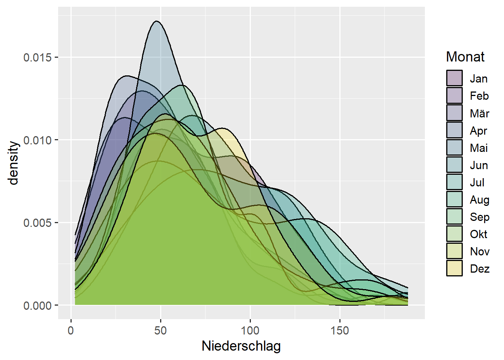

f1 <- function(x) x^2
f1(2)[1] 4| Name | Inhalt |
|---|---|
d_ns_m |
Monatswerte für Niederschläge in Bochum |
Quellen: https://www.dwd.de
f1 <- function(x) x^2
f1(2)[1] 4f1 berechnet x^2function(x) x^2 die Funktion mit dem Namen f1f2 <- function(x) dnorm(x, mean = 1, sd = 2)
f2(0)[1] 0.1760327f2 berechnet mit dnorm(x, mean = mu, sd = sigma) Normalverteilungmu und Standardabweichung sigmageom_function()f1 <- function(x) x^2
ggplot() +
geom_function(fun = f1)geom_function() plottet Kurve ohne Mappingf2 <- function(x) dnorm(x, mean = 1, sd = 2)
ggplot() +
geom_function(fun = f2)fun = <Funktion>Die beiden Beispielfunktionen sehen nicht so charakteristisch aus wie wir es gewohnt sind. Dafür müssen wir den Bereich festlegen, der uns angezeigt wird.
ggplot(data = tibble(A = c(-1, 1), B = c(1, 1))) +
geom_function(fun = f1) + geom_point(mapping = aes(x = A, y = B))ggplot() +
geom_function(fun = f2, xlim = c(-8, 10))xlim explizit angebengeom_ribbon()ggplot() +
geom_ribbon(
mapping = aes(x = after_stat(x), ymin = 0, ymax = after_stat(y)),
stat='function', fun=f2, xlim = c(-8, 10), color='black', fill='linen', alpha=0.8
)x und y aus stat = 'function' mit after_stat(x) und after_stat(y)
mu <- mean(d_ns_m$Niederschlag)
sigma <- sd(d_ns_m$Niederschlag)f für Normalverteilung x mit mu und sigmaf <- function(x) dnorm(x, mean=mu, sd=sigma)p speichern (für nächste Folie)p <- ggplot(data = d_ns_m) +
geom_histogram(mapping = aes(x = Niederschlag, y = stat(density)), binwidth = 5, boundary = 0) +
geom_line(stat = 'function', fun = f, color = 'red', linewidth = 1)pWarning: `stat(density)` was deprecated in ggplot2 3.4.0.
ℹ Please use `after_stat(density)` instead.ggplot(data = d_ns_m) +
geom_qq(mapping = aes(sample = Niederschlag)) +
geom_qq_line(mapping = aes(sample = Niederschlag))geom_qq() sowie geom_qq_line()ggplot(data = d_ns_m, mapping = aes(sample = Niederschlag)) +
geom_qq() +
geom_qq_line()
ggplot()ggplot(data = d_ns_m) +
geom_histogram(mapping = aes(x = Niederschlag, y = stat(density)), binwidth = 10, boundary = 0) +
geom_density(mapping = aes(x = Niederschlag), color = 'red', linewidth = 1) +
lims(x = c(-50, 250))geom_density() erzeugt approximierte Dichtefunktionlims(x = c(xmin, xmax)) (Details später)ggplot(data = d_ns_m) +
geom_histogram(mapping = aes(x = Niederschlag, y = stat(density)), binwidth = 10, boundary = 0) +
geom_density(mapping = aes(x = Niederschlag), color = 'red', linewidth = 1, fill = 'linen', alpha = 0.8) +
lims(x = c(-50, 250))fill = <Farbe>alpha = <Wert>ggplot(data = d_ns_m) +
geom_histogram(mapping = aes(x = Niederschlag, y = stat(density)), binwidth = 10, boundary = 0) +
geom_density(mapping = aes(x = Niederschlag), bw = 2, linewidth = 1, color = 'orange') +
geom_density(mapping = aes(x = Niederschlag), bw = 4, linewidth = 1, color = 'blue') +
geom_density(mapping = aes(x = Niederschlag), bw = 8, linewidth = 1, color = 'red') +
lims(x = c(-50,250))bw = <Wert> legt die Breite des Kerns fest (bw = bandwidth)bw umso glatter die Kurveggplot(data = d_ns_m) +
geom_density(mapping = aes(x = Niederschlag, fill = Monat), alpha = 1/4)
alpha = <Wert>ggplot(data = d_ns_m) +
geom_density_ridges(mapping = aes(x = Niederschlag, y = Monat), bandwidth = 10)geom_density_ridges() wie geom_density() aber untereinanderbandwidth = <Wert> angebenggridges installierenggplot(data = d_ns_m) +
geom_violin(mapping = aes(x = 0, y = Niederschlag))ggplot(data = d_ns_m) +
geom_violin(mapping = aes(x = Monat, y = Niederschlag))f <- function(x) sin(x^2)mu <- mean(<Vektor>)
sigma <- sd(<Vektor>)
f <- function(x) dnorm(x, mu, sigma)geom_function()ggplot() +
geom_function(stat = 'function', fun = <Funktion>, xlim = c(<from>, <to>), Argumente)xlim festlegengeom_line(Verweis zu Basics, “Was sind Argumente?”)geom_ribbon()ggplot() +
geom_ribbon(
mapping = aes(x = after_stat(x), ymin = 0, ymax = after_stat(y)),
stat = 'function', fun = <Funktion>, xlim = c(<from>, <to>), Argumente
)x und y)geom_function()geom_density()ggplot(data = <DATAFRAME>) +
geom_density(mapping = aes(x = <M>, ...), Argumente)| AES | Beschreibung | Optional |
|---|---|---|
| x | Merkmal für Dichte | Nein |
| AES/Argumente | Beschreibung | Optional |
|---|---|---|
| color | Farbe der Linie | Ja |
| fill | Füllfarbe | Ja |
| alpha | Transparenz der Füllfarbe | Ja |
Aesthetics und Argumente synonym verwendet, sinnvoll?
| Argumente | Beschreibung | Optional |
|---|---|---|
| kernel | Art des Kerns (‘gaussian’, ‘epanechnikov’, ‘cosine’, …) | Ja |
| bw | Glättungsbreite h | Ja |
→ Nicht genau dieselben Kerne, wie in der Vorlesung
ggplot(data = <Dataframe>) +
geom_qq(mapping = aes(sample = <M>), Argumente) +
geom_qq_line(mapping = aes(sample = <M>), Argumente)
| AES | Beschreibung | Optional |
|---|---|---|
| sample | Merkmal mit Daten | Nein |
| Argumente | Beschreibung | Optional |
|---|---|---|
| color | Farbe | Ja |
ggplot(data = <Dataframe>) +
geom_density_ridges(mapping = aes(x = <M>, y = <M>, ...), bandwidth = bw)| AES | Beschreibung | Optional |
|---|---|---|
| x | Merkmal für Dichte | Nein |
| y | Merkmal einzelne Plots | Nein |
| AES/Argumente | Beschreibung | Optional |
|---|---|---|
| color | Farbe der Linie | Ja |
| fill | Füllfarbe | Ja |
| alpha | Transparenz der Füllfarbe | Ja |
| Argumente | Beschreibung | Optional |
|---|---|---|
| bandwidth | Glättungsbreite h | Ja |
→ Wie Boxplot